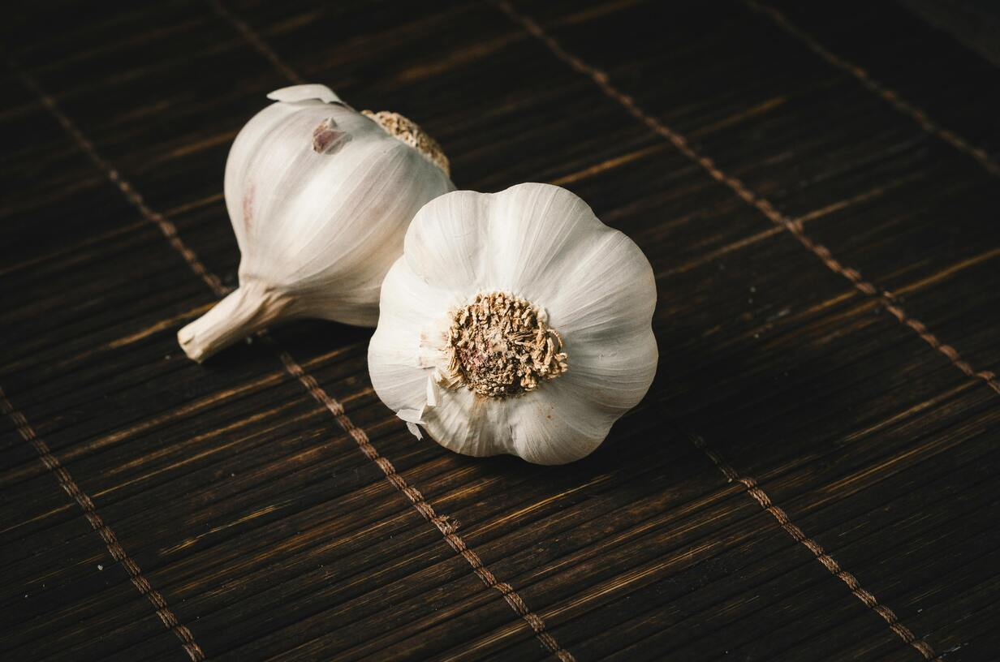
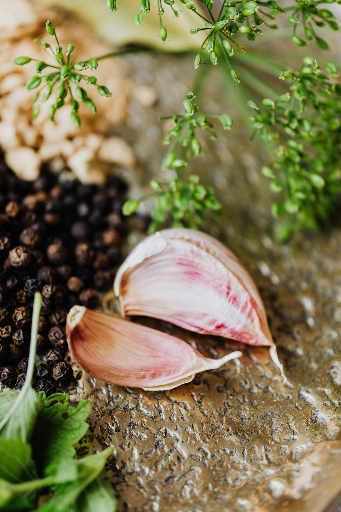
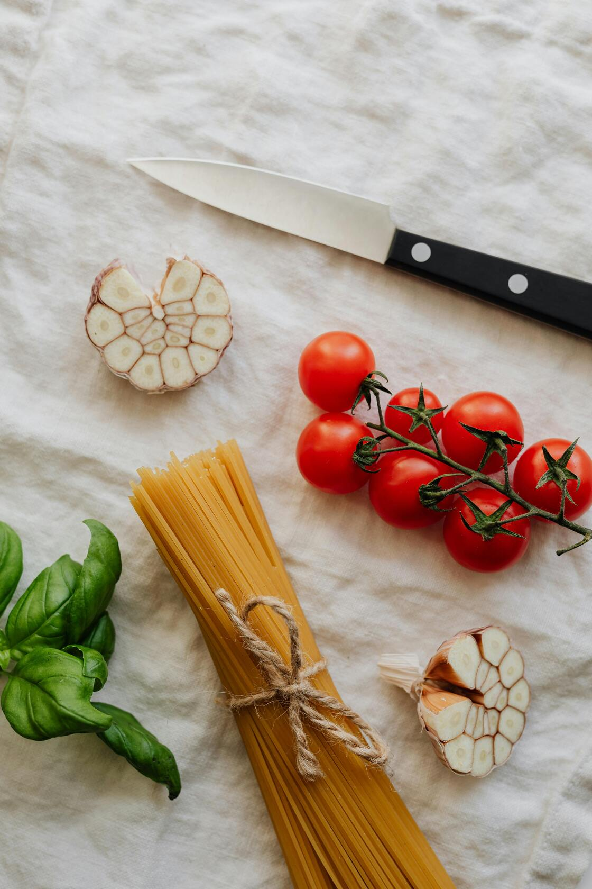
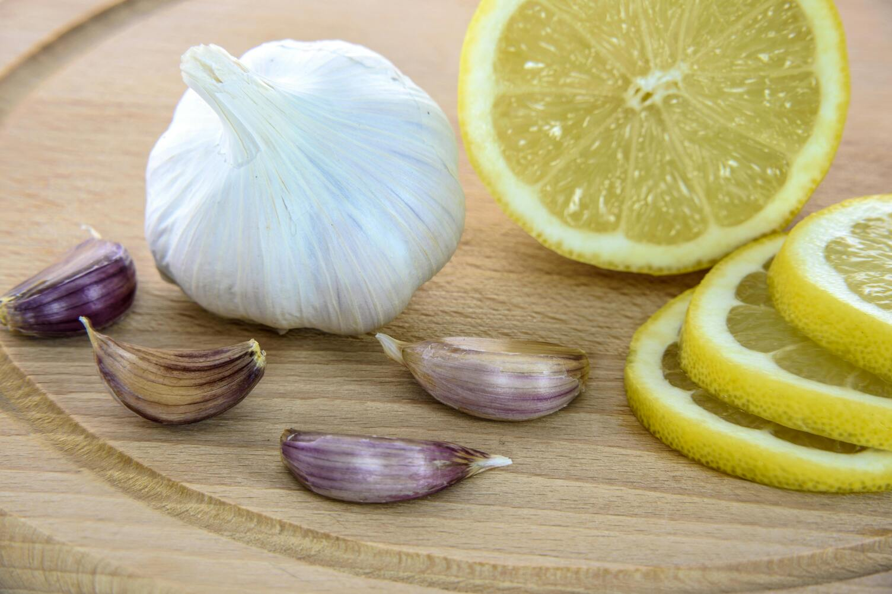
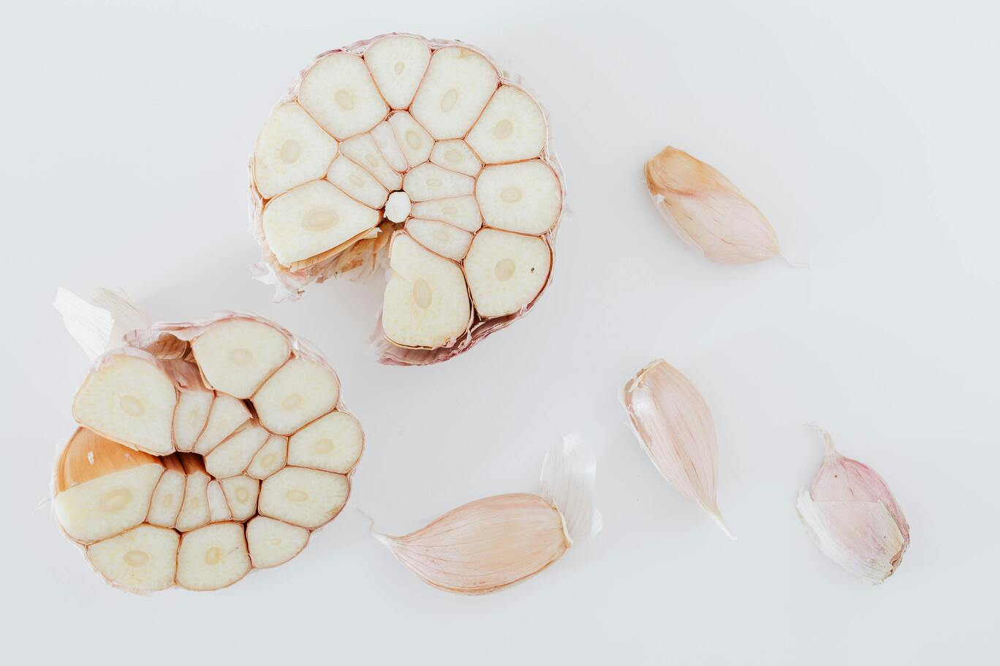

House of Clove
home
amazing recipes
downsides of eating garlic
Garlic: More Than Just a Flavor
I built this space to appreciate and celebrate the existence of garlic. - Because it deserves more than just a spot in your kitchen.
Are you a fellow garlic enthusiast?
Sign up now and join the awesome garlic community!
Sign up

All About Garlic

Flavor Enhancer
Garlic brings a
rich, savory
kick that instantly makes food
more exciting
.

Versatility
Garlic finds a place in nearly
every
kind of dish — and somehow
always makes it better
.

Long Shelf Life
Long-lasting
and
low-maintenance
, garlic is always there when dinner calls.

Health
Behind its bold flavor, garlic is loaded with allicin and antioxidants and delivers real
health benefits!